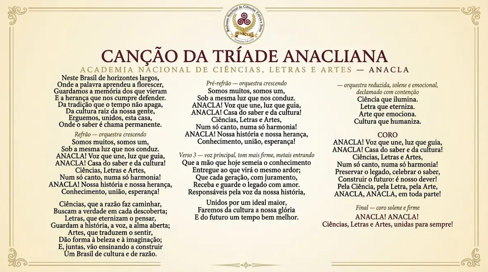

Identidade e tradição
O hino da ANACLA é um símbolo da identidade e tradição da Academia Nacional de Ciências, Letras e Artes.

Academia Nacional de Ciências, Letras e Artes
INTRODUÇÃO ORQUESTRAL
Cordas graves, metais suaves e tímpanos discretos. Abertura solene.
Nesta terra de horizontes largos
Nesta terra de horizontes largos,
Onde a palavra aprendeu a florescer,
Guardamos a memória dos que vieram
E a herança que nos cumpre defender.
Da tradição que o tempo não apaga,
Da cultura que é raiz da nossa gente,
Erguemos, de mãos dadas, nossa casa,
Onde o saber é chama permanente.
Orquestra em crescendo
Somos muitos, somos um,
Sob a mesma luz que nos conduz.
Grande coro misto SATB — orquestra plena
ANACLA! Voz que une, luz que guia,
ANACLA! Casa do saber e da cultura!
Ciências, Letras e Artes,
Num só canto, numa só harmonia!
ANACLA! Nossa história e nossa herança,
Conhecimento, união, esperança!
Voz principal acompanhada por cordas e madeiras
Ciências, que a razão faz caminhar,
Buscam a verdade em cada descoberta;
Letras, que eternizam o pensar,
Guardam a história, a voz, a alma aberta;
Artes, que traduzem o sentir,
Dão forma à beleza e à imaginação;
E, juntas, vão ensinando a construir
Um país de cultura e de razão.
Orquestra em crescendo
Somos muitos, somos um,
Sob a mesma luz que nos conduz.
Grande coro misto SATB
ANACLA! Voz que une, luz que guia,
ANACLA! Casa do saber e da cultura!
Ciências, Letras e Artes,
Num só canto, numa só harmonia!
ANACLA! Nossa história e nossa herança,
Conhecimento, união, esperança!
Voz principal em tom mais firme, com entrada dos metais
Que a mão que hoje semeia o conhecimento
Entregue ao que virá o mesmo ardor;
Que cada geração, com juramento,
Receba e guarde o legado com amor.
Responsáveis pela voz da nossa história,
Unidos por um ideal maior,
Faremos da cultura a nossa glória
E do futuro um tempo bem melhor.
Orquestra reduzida — interpretação solene e emocional
Ciência que ilumina.
Letra que eterniza.
Arte que emociona.
Cultura que humaniza.
Coro completo e orquestra sinfônica — clímax da composição
ANACLA! Voz que une, luz que guia,
ANACLA! Casa do saber e da cultura!
Ciências, Letras e Artes,
Num só canto, numa só harmonia!
Preservar o legado, celebrar o saber,
Construir o futuro: é nosso dever!
Pela Ciência, pela Letra, pela Arte,
ANACLA, ANACLA, em toda parte!
Coro solene e firme
ANACLA! ANACLA!
Ciências, Letras e Artes, unidas para sempre!
Última nota longa, majestosa e conclusiva.